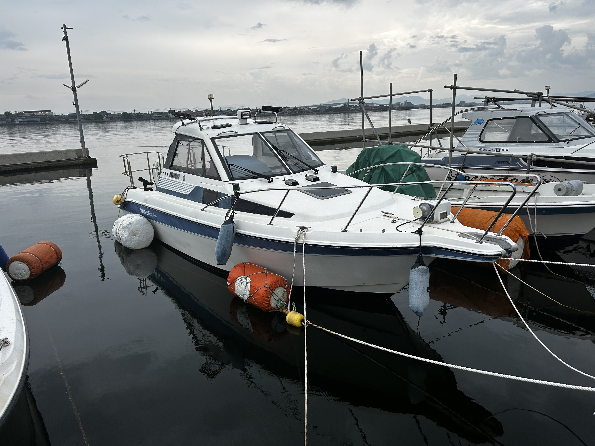
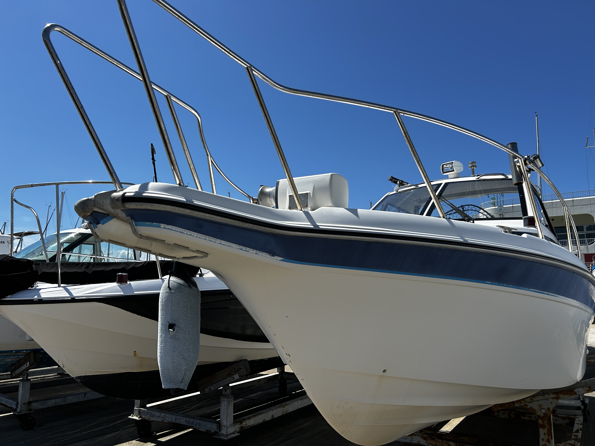
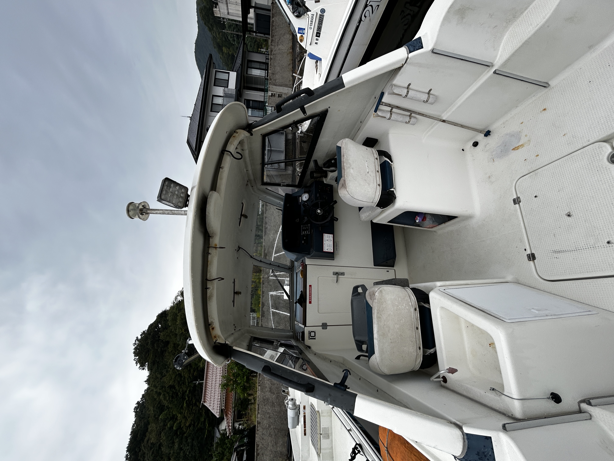

船の外観・デッキ



基本スペック
| 全長 | 約24フィート（約7mクラス） |
|---|---|
| エンジン | スズキ 175馬力（船外機） |
| 定員目安 | 最大6名まで（快適人数：釣り3〜4名） |
| 操船スタイル | サイドウォークではないタイプ（片側通路） |
| トイレ | キャビン内に個室トイレあり |
| 航行エリア | 森山港〜境水道〜中海〜美保関周辺（当日説明） |
Boat Guide
山陰レンタルボートでご利用いただく船のレイアウト・装備・安全面についてまとめました。
「どんな船なのか」「何人くらいで快適か」をイメージしやすいように写真と仕様を掲載しています。
| 全長 | 約24フィート（約7mクラス） |
|---|---|
| エンジン | スズキ 175馬力（船外機） |
| 定員目安 | 最大6名まで（快適人数：釣り3〜4名） |
| 操船スタイル | サイドウォークではないタイプ（片側通路） |
| トイレ | キャビン内に個室トイレあり |
| 航行エリア | 森山港〜境水道〜中海〜美保関周辺（当日説明） |